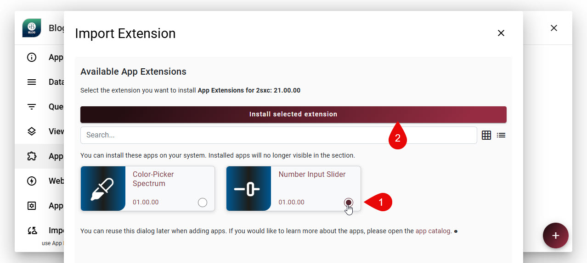
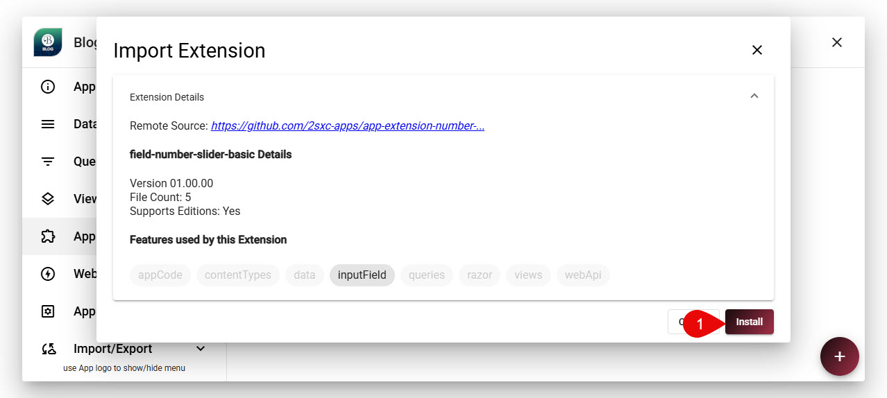
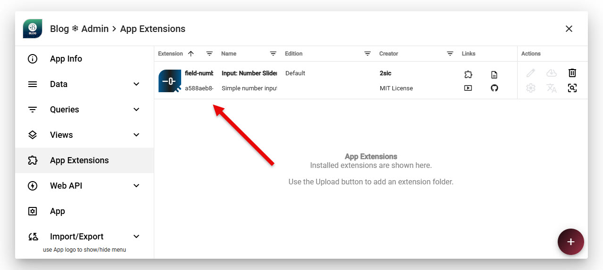
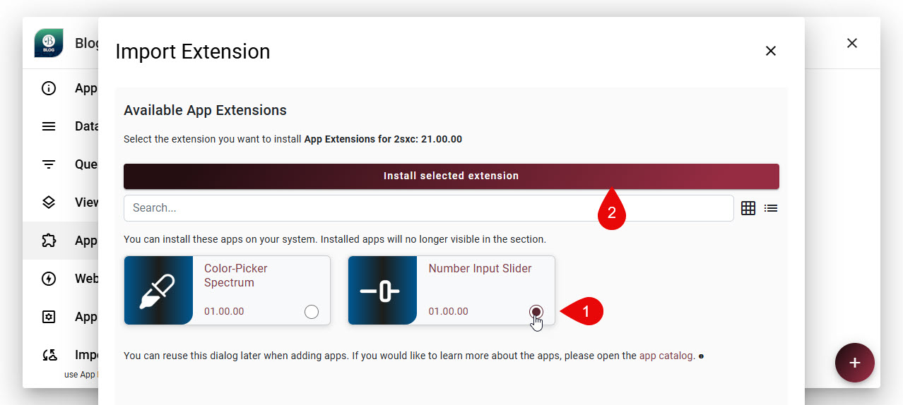
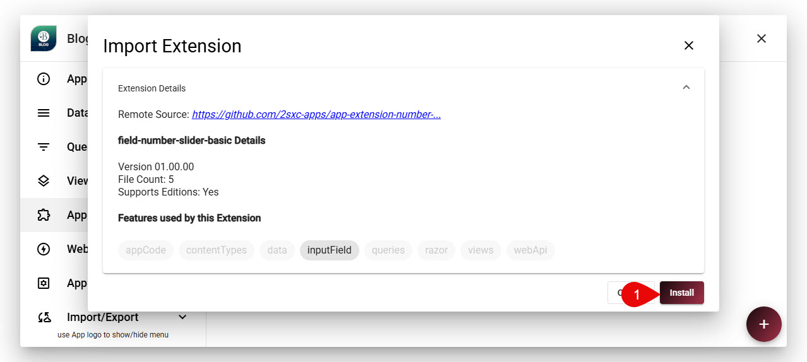
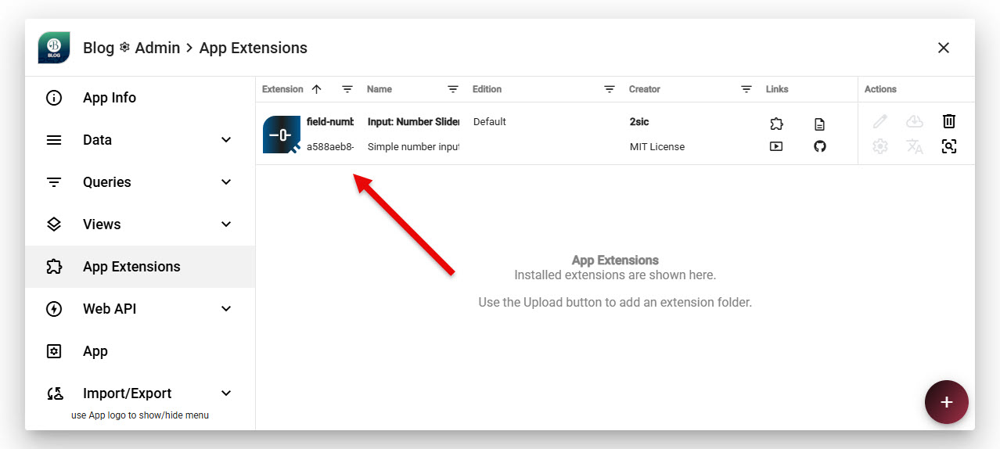

How to Install App Extensions
App Extensions can be installed quickly and easily - and also removed again if needed.
There are two ways to install App Extensions:
- From the 2sxc App Store: Many App Extensions are available in the 2sxc App Store. You can browse the store, find the extension you want, and install it directly into your App with just a few clicks.
- Manual Installation: If you have an App Extension package (usually a .zip file), you can manually upload and install it into your App through the 2sxc interface.
To install an App Extension from the 2sxc App Store, follow these steps:
- Go to the App Settings of the App where you want to install the extension.
- Navigate to the App Extensions and click Add Extension.
- Choose Extensions Catalog and select your extension from the list.
- Click Install to add the extension to your App.
When you're about to install the app, the system will do a preflight to check for any potential issues. If everything looks good, the installation will proceed.
 





Note
Note that many Extensions can be installed in multiple editions, allowing you to test a new edition while keeping the stable one active. This is explained more below.
Post-Installation Steps
Every extension is different and offers different features. Some extensions will work immediately after installation, while others may require additional configuration.
Installing Multiple Editions of an Extension (Polymorphic Extensions)
Some App Extensions are polymorphic, meaning they can be installed in multiple editions. This allows you to test a new edition of an extension while keeping the stable one active.
This shows you how the install experience adds the editions selection, and also allows you to force-install if the specific extension was already installed in the same edition (overwrite).

Tip
Polymorphic editions are just simple folders in your App.
For 2sxc to differentiate which folders are editions and which ones are just normal folders,
you need to create the app.json configuration in your Apps root App_Data folder.
See App Configuration /App_Data/app.json for more information on how to set this up.
When installing a polymorphic extension, you will be prompted to select the edition you want to install. You can install to multiple editions in the same go.
Important
2sxc Polymorphism is powerful, but there are limitations. If an extension contains data schemas or data entities, these will only be loaded from the primary edition, since the data model cannot be polymorphic.
History
- App Extensions introduced in v21